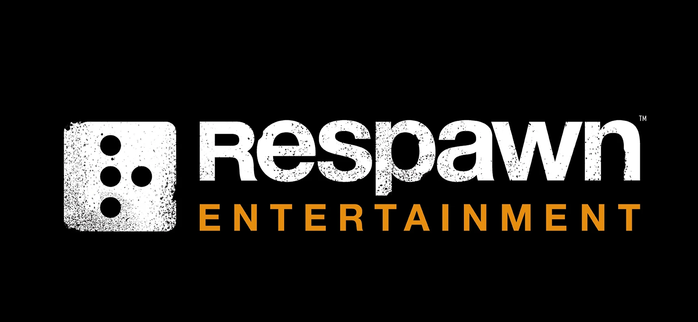
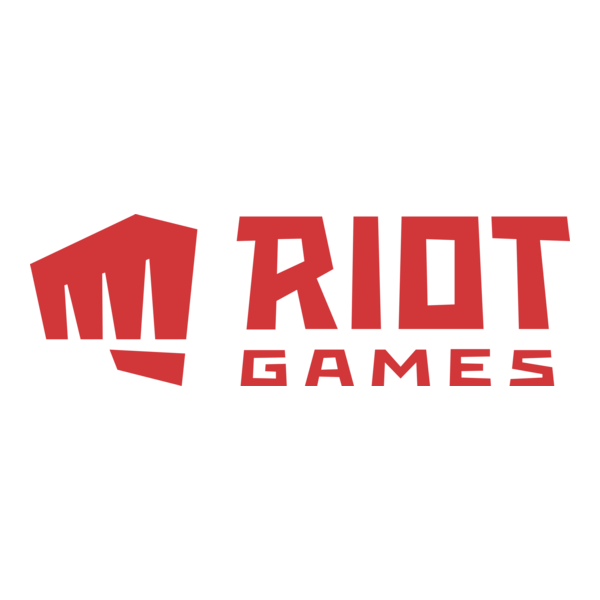

Senior Encounter Designer (Star Wars Jedi)
Respawn Entertainment
View Job Listing
The senior encounter designer for upcoming Star Wars Jedi games is tasked to create combat encounters for the game. Imagining unique scenarios and situations for the player to encounter in the game. I enjoy creating story scenarios as storytelling is one of my greatest strengths. With my vast knowledge of the game and world its based in, I believe I can create an ideal scenario for each encounter. I would love this job as it helps my critial thinking and storytelling capabilities to soar within this job.

Principal Game Designer, Progression and Economy - Unpublished R&D Product
Riot Games
View Job Listing
For this unplubished Riot MMO game, this job entails the contribution to the technical progression and game design of this game. With my knoweldge of the game this MMO is based off from, I would have knowledge about it's inner workings and overall game design principles. For over 10 years, I've played the game this MMO is based about, So I would have experience in its intentional game design.
Game Designer - D&D
Wizards of the Coast
View Job Listing
I’m excited about the Game Designer D&D role at Wizards of the Coast because I have a deep passion for tabletop RPGs and a strong understanding of how to craft engaging, balanced gameplay experiences. I enjoy the challenge of designing imaginative mechanics and writing clear, player-friendly content, and I enjoy thinking critically about the balancing, pacing, and fun value. Overall my skills in creative writing would help me excel in this job.